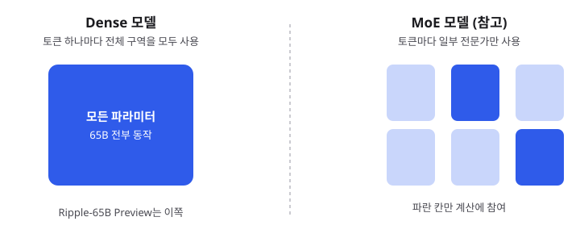
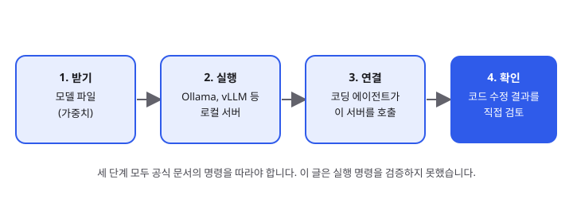

Ripple-65B Preview: 650억 파라미터를 전부 쓰는 공개 코딩 모델, 입문 개발자가 알아야 할 것
- 미국 스타트업 리커시브(Ricursive)가 11월 4일 코딩에 맞춘 650억 파라미터 모델 Ripple-65B Preview의 가중치를 Apache 2.0 라이선스로 공개했습니다.
- mixture-of-experts(MoE)가 아니라 모든 파라미터를 매번 쓰는 밀집(dense) 구조이며, 로컬 실행 도구를 통해 직접 돌려 볼 수 있습니다.
- 벤치마크 점수는 회사 자체 발표 수치라 그대로 믿기보다 직접 비교해 봐야 합니다. 입문자에게는 "내 PC에서 코딩 에이전트를 돌리는 실험"의 좋은 출발점입니다.
요즘 개발자 커뮤니티에서는 "이 모델 하나로 코딩 에이전트를 로컬에서 돌릴 수 있나?"라는 질문이 자주 보입니다. 11월 초 공개된 Ripple-65B Preview는 그 질문에 가장 가까운 공개 모델 중 하나로 소개되고 있습니다. 다만 이 글은 공식 모델 카드를 직접 읽지 못한 상태에서 쓰므로, 수치는 "~에 따르면"으로 표시했습니다.
01한눈에 보기
모델의 파라미터(parameter)는 쉽게 말해 학습으로 조정된 "기억 칸"이라고 생각하면 됩니다. 650억 개의 칸이 있다는 뜻이고, 이 칸들이 입력 한 글자 한 글자마다 얼마나 많이 계산에 끼어드는지가 모델의 구조를 가릅니다. 도서관에 비유하면, 책 한 권을 찾을 때 서가 전체를 한 번씩 훑는 방식이 dense 구조이고, 주제별로 담당 사서 몇 명만 불러 찾는 방식이 MoE 구조입니다. Ripple-65B Preview는 앞쪽 방식, 즉 모든 파라미터를 매번 사용하는 밀집 구조로 소개되어 있습니다.

Apache 2.0: 상업적 사용과 수정, 재배포를 대체로 허용하는 대표적인 오픈소스 라이선스입니다.
밀집(dense): 토큰마다 전체 파라미터를 쓰는 구조입니다.
02어떻게 동작하나요
코딩 에이전트는 "파일을 읽고, 명령을 실행하고, 결과를 보고, 다시 고치는" 과정을 여러 번 반복합니다. 이때 모델은 대화 한 번이 아니라 긴 작업 맥락을 계속 붙잡고 있어야 합니다. 여러 출처에 따르면 이 모델은 최대 100만 토큰 안팎의 긴 맥락을 지원한다고 소개되어 있습니다. 실제 사용 가능한 길이는 실행 도구와 메모리 설정에 따라 달라지므로, 공식 문서에서 확인하는 것이 안전합니다.
흐름을 아주 단순하게 보면 다음과 같습니다. 모델 파일을 받고, 로컬 서버 도구로 띄운 뒤, 코딩 에이전트가 그 서버에 질문을 보내는 구조입니다. 그림 2는 이 흐름을 정리한 것입니다.

03왜 지금 화제인가요
화제의 중심은 두 가지입니다. 하나는 "미국 쪽 오픈 웨이트 모델이 중국 대형 모델들과 경쟁할 만하다"는 평가이고, 다른 하나는 회사가 발표한 코딩 에이전트 벤치마크 점수입니다. 국내 기술 블로그들은 이 점수를 그대로 받아들이기보다 측정 조건을 따져 봐야 한다고 지적하고 있습니다.
04관련 나라·기업
| 구분 | 이름 | 어떤 관련이 있나 |
|---|---|---|
| 기업 | Ricursive (리커시브) | 모델을 만들고 공개한 미국 측 개발사로 소개됩니다. |
| 플랫폼 | Hugging Face | 모델 가중치와 카드가 올라가 있는 공개 저장소로 언급됩니다. |
| 도구 | Ollama | 로컬 PC에서 모델을 내려받아 실행하는 도구입니다. 목록 페이지가 확인됩니다. |
| 도구 | vLLM | 서버용 추론 엔진입니다. 지원 레시피 페이지가 있으나 실행 명령은 확인하지 못했습니다. |
05기존 방식과 무엇이 다른가
| 비교 항목 | 기존 방식 (클라우드 API) | Ripple-65B Preview (로컬 실행) |
|---|---|---|
| 모델 위치 | 제공사 서버 | 내 PC나 사내 서버 |
| 비용 구조 | 토큰 사용량만큼 과금 | 하드웨어 준비가 필요하고 추가 과금은 없음 |
| 데이터 이동 | 코드가 외부 서버로 전송 | 코드가 내부에 머묾 |
| 라이선스 | 약관에 따른 이용 | Apache 2.0 (모델 카드 기준, 원문 확인 필요) |
06직접 해 보기
아래 단계는 흐름만 정리한 것입니다. 실제 명령어는 공식 문서에서 확인한 뒤 따라 하세요. 이 글을 쓰는 시점에는 공식 모델 카드를 읽지 못해 명령어를 검증하지 못했습니다.
1단계: 하드웨어 확인
Ollama 목록 페이지에는 모델 크기가 대략 39~46GB로 표시되어 있습니다. 메모리가 그보다 넉넉한지 먼저 확인하세요.
2단계: 실행 도구 설치
Ollama 공식 사이트의 설치 안내를 따라 도구를 설치합니다. 설치 방법은 운영체제마다 다릅니다.
3단계: 모델 실행과 질문
Ollama 라이브러리 페이지에 적힌 모델 이름으로 실행한 뒤, 간단한 함수 작성 요청을 보내 응답을 확인해 보세요.
4단계: 결과 검토
에이전트가 고친 코드는 반드시 테스트와 diff로 직접 검토하세요. 자동 수정은 실수도 자동으로 만듭니다.
07주의할 점과 한계
- 벤치마크 점수는 회사가 자체 측정한 수치입니다. 측정 하네스가 바뀌면 순위가 달라진다는 지적이 있습니다.
- "Preview"라는 이름처럼 아직 정식 버전이 아닙니다. 업데이트나 설정이 바뀔 수 있습니다.
- 650억 파라미터 모델은 개인 PC에서 쾌적하게 돌리기 어렵습니다. 메모리 부족으로 느려지거나 실행이 안 될 수 있습니다.
- 맥락 길이 수치는 출처마다 1M과 2M으로 다르게 적혀 있어 확정하지 못했습니다.
- 이 글은 공식 모델 카드와 발표문을 직접 열지 못했습니다. 라이선스 원문과 수치는 반드시 공식 페이지에서 다시 확인하세요.
08정리
Ripple-65B Preview는 "모든 파라미터를 쓰는 650억 규모의 공개 코딩 모델"이라는 점에서 로컬 코딩 에이전트를 실험하고 싶은 개발자에게 흥미로운 선택지입니다. 라이선스와 공개 방식이 분명해서, 회사 내부에서 실험하기에도 부담이 적습니다.
하지만 벤치마크 1등이라는 말보다, 내 코드와 내 PC에서 실제로 얼마나 잘 동작하는지가 중요합니다. 입문 개발자라면 작은 모델로 같은 실험을 먼저 해 보고, 이 모델을 같은 조건에서 비교해 보는 순서를 추천합니다.
09참고한 글
- Ripple-65B Preview Release: Open Weights, Benchmark Caveats braindetox · 2026.11.06
- Ricursive Releases Ripple-65B Preview, Apache 2.0 Open Coding Model Let's Data Science · 2026.11.06
- ripple-preview (Ollama 라이브러리) Ollama · 날짜 미표시
- vLLM Recipes: Ricursive AI vLLM · 날짜 미표시